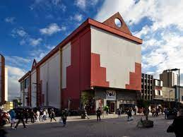

Parque Shopping Maia
Endereço : Av. Bartolomeu de Carlos, 230 - Jardim Flor da Montanha, Guarulhos - SP
Como ChegarShopping arejado com vários cafés e restaurantes, além de um cinema e uma área de recreação infantil.
Shopping internacional

Endereço : Rua Engenheiro Camilo Olivetti, 295 - Vila Itapegica, Guarulhos - SP
Como ChegarShopping grande com lojas, restaurantes, um mercado, cinema e playground para as crianças.
Poli Shopping
Endereço : R. Dom Pedro II, 178 - Centro, Guarulhos - SP
Como ChegarShopping modesto e fechado com diversas lojas em vários andares, além de uma praça de alimentação simples.